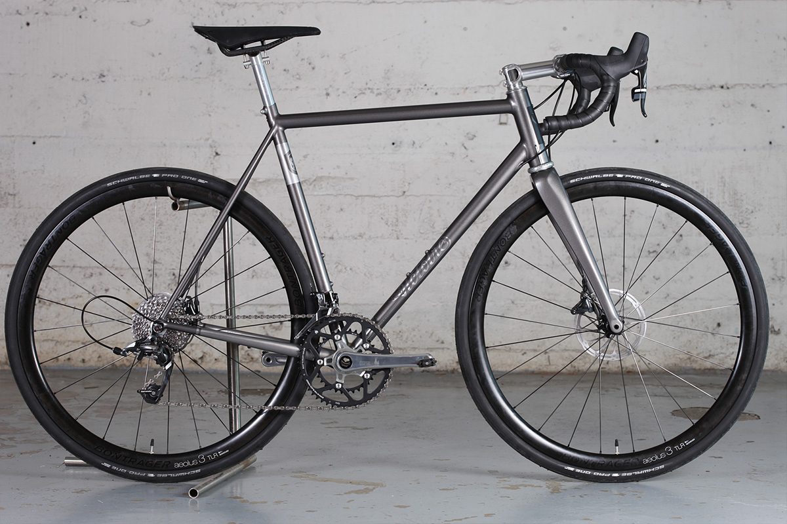
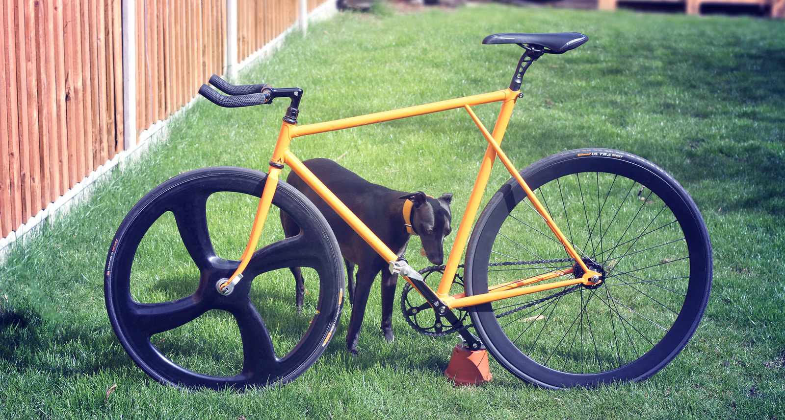
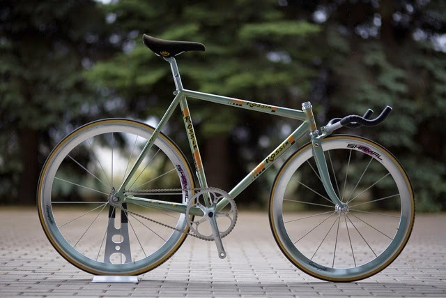

Historia
En los años 70, en un pequeño taller de Milán, Italia, el excéntrico constructor de bicicletas Giovanni Battista Rizzato (apodado "El Mago del Sloping") creó una máquina que desafiaría todas las convenciones de la época: "La Flecha Plateada", una bicicleta de ruta con un sloping negativo tan pronunciado que parecía desafiar las leyes de la física.
Características legendarias:
-
Cuadro: Acero Columbus SL, con un ángulo de tubo superior ascendente (+5°), haciendo que el asiento quedara más alto que el manubrio, en una postura casi de persecución aerodinámica... pero incómodamente extrema.
-
Asiento: Una pieza artesanal de acero, curvada hacia adelante como las "suspensiones" de las motos chopper, pero rígida como una espada.
-
Componentes: Campagnolo Super Record, con bielas de 165mm.
-
Color: Un plateado metálico, posiblemente acero pulido, inspirado en los autos de carreras de los 70.
La Historia de su Éxito (y su Misterioso Final)
En 1975, un desconocido ciclista amateur, Marco "El Halcón" Bellini, ganó el Giro de Lombardía con esta bicicleta, sorprendiendo a todos por su posición aerodinámica y su velocidad en los descensos. Los puristas decían que era imposible que un cuadro con sloping negativo fuera eficiente, pero La Flecha Plateada rompió las reglas.
Sin embargo, en 1978, tras una caída espectacular (pero no grave) en la Milán-San Remo, la bicicleta desapareció misteriosamente del pelotón. Algunos dicen que fue robada por un coleccionista suizo; otros, que Rizzato la destruyó para evitar que su diseño revolucionario cayera en manos equivocadas.
Hoy, solo quedan fotos borrosas y recuerdos de quienes juran haberla visto, rodando como un fantasma en las carreteras de los Alpes al amanecer.
¿Existió realmente? ¿Fue solo un mito?
Nadie lo sabe... pero si alguna vez ves una bicicleta plateada con un extraño ángulo invertido, no la persigas. Dicen que quien la monta, nunca vuelve a ser el mismo.